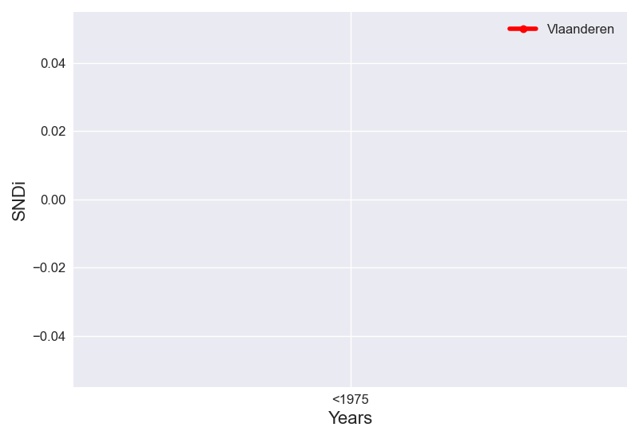

The cumulative and incremental level of street network disconnectivity in Vlaanderen change over time in the same way.
Taking into account all roads in Vlaanderen, the overall level of street network sprawl is 2.23. New street construction in Vlaanderen has been increasing in sprawl over time. This increase has slowed: between <1975 and 1976-1990, SNDi rose by 1.08 points, but between 1991-2000 and 2001-2014, it rose by just 0.08.
The levels of SNDi for each time period in Vlaanderen's 4 most populous cities are plotted too. The cities in Vlaanderen that do not follow the same trend in SNDi are: ['Antwerp', 'Liège', 'Ghent'].
To date, Vlaanderen is the 1st-most disconnected region out of the 2 regions in Belgium. It has largely maintained its place in the ranks since 1975. In <1975, it ranked 1st, and remained in this position since.